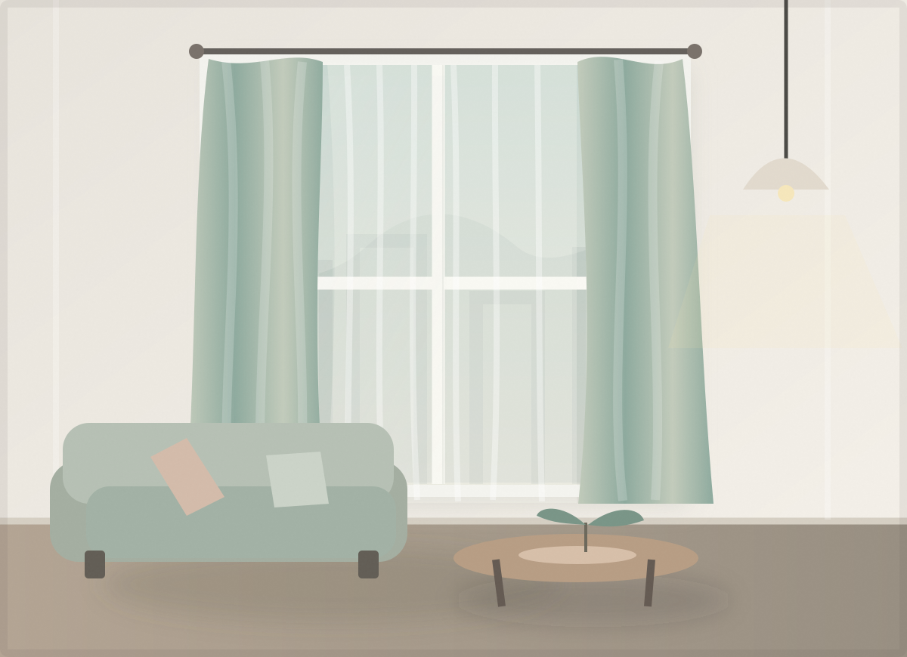
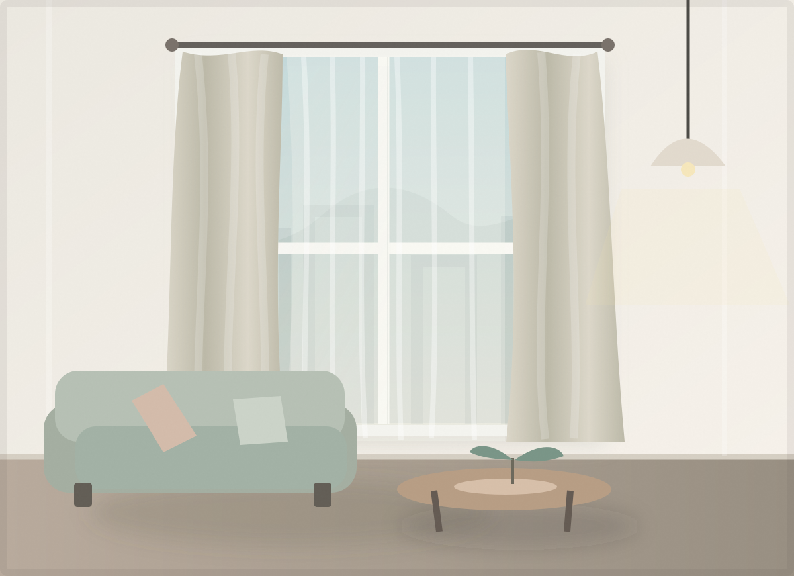

Текстильное оформление СТУДИЯ ТЕКСТИЛЬНОГО ДИЗАЙНА / МОСКВА
Управляйте
светом.
Создавайте
атмосферу.
Шторы, жалюзи и текстиль, которые становятся частью вашего интерьера. Подберём решение под пространство, ритм жизни и ваши пожелания.
От идеи до финального оформления✳

ИНТЕРЬЕРНАЯ КОНЦЕПЦИЯ ↗Текстиль
в гармонии с пространством
в гармонии с пространством
МЯГКОСТЬ ТКАНИ — ЧИСТОТА ЛИНИЙ
БОЛЬШЕ, ЧЕМ ШТОРЫ
Хорошее оформление окна не спорит с интерьером. Оно раскрывает его.
НАПРАВЛЕНИЯ СТУДИИВаше окно.
Ваше окно.
Ваш сценарий.
От фактурных портьер до лаконичных солнцезащитных систем — выбирайте ощущение, которое хотите создать дома.
ВНИМАНИЕ К ДЕТАЛЯМКрасиво —
Красиво —
когда удобно.
Фактуры с характером
Подбираем ткани и текстиль в сочетании с оттенками и материалами интерьера.
Свет под контролем
От мягкого рассеивания до приватности и затемнения — под задачи комнаты.
По вашим размерам
Учитываем особенности окна, размеры, крепления и пожелания по оформлению.
ПОПРОБУЙТЕ СЕЙЧАСПодберите оформление
Подберите оформление
своего окна.
Простой способ определиться с направлением. Выбирайте систему, цвет и детали — мы подготовим понятный запрос для дизайнера.
ВАШЕ ПРОСТРАНСТВОИнтерактивный подбор
Что подбираем?
Для какой комнаты?
Цветовая палитра
ПесочныйСпособ установки
Фотографии не передаются на сайт. При отправке заявки приложите их в VK вручную.
Это схематичный эскиз цвета и конструкции, а не фотография реального изделия или точный расчёт освещённости.
ИДЕИ ДЛЯ ВАШЕГО ИНТЕРЬЕРАВдохновение
Вдохновение
в деталях.
Посмотрите, как разные решения меняют атмосферу комнаты — от расслабленной спальни до собранного рабочего пространства.
Все изображения ниже — авторские интерьерные концепции, не фотографии выполненных заказов Modotex.ЦВЕТ И ФАКТУРАМатериал
Материал
меняет всё.
Мы смотрим не только на оттенок. Плотность, текстура, пластика складки и то, как ткань ведёт себя при дневном свете, — всё влияет на настроение помещения.
Найти своё сочетание Образцы на экране — иллюстрации фактур и цветовых направлений. Наличие тканей уточняется при подборе.ТАКТИЛЬНЫЕ СОЧЕТАНИЯ
Фактурный лён
Мягкий велюр
Лёгкая вуаль
Плотная ткань
ОТ ПЕРВОГО ВОПРОСАПуть к вашему
Путь к вашему
идеальному окну.
Обсудим задачу и подберём подходящее решение. Этапы и условия согласуются для конкретного заказа.
Знакомимся
Вы рассказываете о комнате, пожеланиях и предпочтениях по стилю.
Подбираем
Предлагаем варианты тканей, конструкций и цветов под ваше пространство.
Уточняем детали
Сверяем размеры и крепления, обсуждаем стоимость и условия выполнения.
Воплощаем
Согласовываем изготовление и монтаж выбранного оформления.
ВОПРОСЫ И ОТВЕТЫПросто
Просто
о важном.
Если не нашли ответа — напишите нам, обсудим вашу задачу.
Задать вопросМожно ли заказать шторы по индивидуальным размерам?
Да, в описании студии заявлен индивидуальный пошив текстиля. Для подбора полезны размеры окна или карниза, фотография комнаты и пожелания по ткани. Точные размеры лучше согласовать со специалистом.
Что выбрать: портьеры, рулонные шторы или жалюзи?
Портьеры помогают создать мягкий, текстильный образ. Рулонные системы выглядят лаконично, жалюзи позволяют направлять свет, а плиссе подходят для разных сценариев оформления. Выбор зависит от окна и задачи — подберите вариант в нашем конструкторе.
Можно ли вызвать дизайнера с образцами?
В описании сообщества Modotex заявлен бесплатный выезд дизайнера с образцами тканей. Уточняйте действующие условия, территорию выезда и доступность при обращении.
Почему на сайте нет точных цен?
Стоимость зависит от ткани, конструкции, размеров, крепления и состава работ. Без подтверждённого прайса мы не показываем условные цифры как реальные цены. После подбора можно запросить индивидуальный расчёт.
Можно ли отправить фото окна?
Да. В конструкторе можно предварительно выбрать фотографии для удобства. Они остаются на вашем устройстве: после перехода в сообщения VK прикрепите снимки вручную.
ЕСТЬ ИДЕЯ ДЛЯ ВАШЕГО ИНТЕРЬЕРА?Давайте
Давайте
найдём её форму.
Расскажите об окне, атмосфере и деталях, которые важны для вас. Начните с короткого подбора или напишите напрямую.